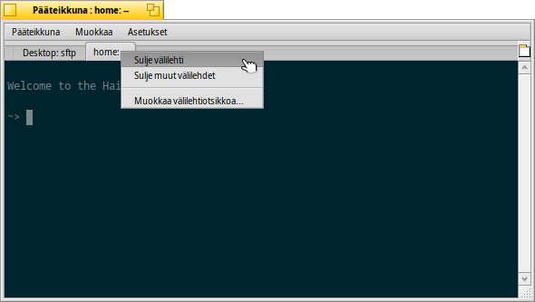
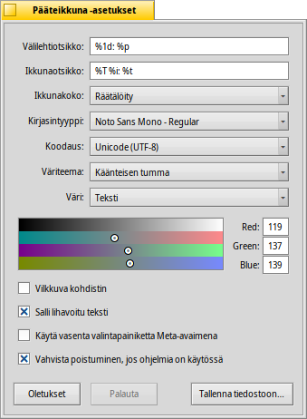

Pääteikkuna
Pääteikkuna
| Työpöytäpalkki: | ||
| Sijainti: | /boot/system/apps/Terminal | |
| Asetukset: | ~/config/settings/Terminal ~/config/settings/profile - lisää/korvaa oletukset tiedostossa /boot/system/settings/etc/profile ~/config/settings/inputrc - lisää/korvaa oletukset tiedostossa /boot/system/settings/etc/inputrc |
Pääteikkuna on Haikun käyttöliittymä bash-komentotulkkiin, the Bourne Again Shell.
Komentotulkin alla toimimisessa viittaan aiheen Skriptaus muutamien verkko-oppituntien linkkeihin ja kannattaa myös katsoa Haikun komentorivisovellukset. Tässä keskitymme itse Pääteikkuna-sovellukseen.
 Ikkunat ja välilehdet
Ikkunat ja välilehdet
Voit avata niin monta Pääteikkunaa kuin tarvitset, joko jokainen omana ikkunana käynnistämällä Pääteikkuna tai näppäimillä ALT N jo käynnissä olevasta Pääteikkunasta. Tai voit käyttää Pääteikkunan välilehtinäkymää ja avata lisää välilehtiä näppäimillä ALT T.
Kaksoisnapsautus välilehtipalkin tyhjään osaan avaa uuden välilehden; kaksoisnapsautus välilehteen avaa valintaikkunan otsikon uudelleennimeämiseksi. Kun siirrät hiiren osoittimen tekstikentän yläpuolelle niin käytettävissä on useita työkaluvihjeessä selitettyjä %-suunniteltuja muuttujia.
Välilehti näyttää oletuksena %1d: %p nykyisen kansion ja merkillä : erotettuna parhaillaan suoritettavan prosessin nimen (tai -- jos se on vain suoritettava komentotulkki, luultavasti joutokäynnissä). Yllä oleva näytönkaappaus näyttää ensimmäisen välilehden FTP-istunnolla Työpöytä-kansiossa ja toisen välilehden joutokäynnissä koti-kansiossa.
Valikon avulla Pääteikkunaotsikkoa voidaan muokata samalla tavoin.
Välilehden napsauttaminen hiiren kakkospainikkeella näyttää asiayhteysvalikon , tai, kuten kaksoisnapsautuksessa, .
Pääteikkunan kokoa voidaan muuttaa kuten kaikkia muitakin ikkunoita tai voit käyttää uudelleenasetuksia valikosta . Näppäimet ALT ENTER vaihtavat kokonäyttötilaan.
Kaikki asetukset, jotka muutat suoraan -valikon kautta, kuten , , tai säilytetään vain nykyisessä istunnossa. Jos haluat tehdä pysyvät muutokset, sinun on toteutettava ne -paneelissa.
Asetukset
avaa paneelin Pääteikkunan vakioasetusten asettamiseksi.
Useimmat tarjotut asetukset selittävät itsensä. Ei ole kuitenkaan täysin ilmeistä, että kirjasinkoko asetetaan -ponnahdusvalikon alivalikossa.
Välilehden ja ikkunaotsikon nimeämiseksi liikuta hiiren kohdistinta Välilehtiotsikko- ja Ikkunaotsikko-"kaavojen" päällä, jolloin saat työkaluvihjeet saatavilla olevista muuttujista.
Voit valita esiasennetun värikaavan kuten tai tai luoda :n värikaavan valitsemalla sen värin, jonka haluat muuttaa valikossa (, , jne.) ja käytä sitten alla olevaa väripoimijaa.
Sitten seuraa lisää valitsimia: sinulla voi olla ja valitse
jos työskentelet tiettyjen laajennetun ASCII-kirjaimiston merkistön osuutta käyttävien UNIX-ohjelmistojen (kuten esimerkiksi GNU Emacs ja GNU readline-kirjasto) kanssa.
Aktivoi valintaruutu ja sinua varoitetaan, kun yrität sulkea Pääteikkunan, jossa suoritetaan sovellusta.
| antaa sinun tallentaa eri asetukset erillisenä profiilina, joka avautuu kaksoisnapsautuksella profiilin mukaisesti asetetuksi Pääteikkunaksi. | ||
| tuo sinulle takaisin ne asetukset, jotka olivat aktiivisia, kun avasit Asetukset-paneelin. | ||
| nollaa kaikki oletusarvoihin. |
Pikanäppäimet
Löydät hyödyllisten pikanäppäimien luettelon asiakirjasta Pikanäppäimet ja näppäinyhdistelmät.
Toinen näppärä ominaisuus, joka on enemmän näppäin & hiiri-yhdistelmä: Pitämällä alhaalla näppäintä ALT, jolloin polku tai verkko-osoite hiiren osoittimen alla tulee korostetuksi. Hiiren ykköspainike avaa kohteen tiedosto/kansio tai webbisivun. Hiiren kakkospainike avaa asiayhteysvalikosta joko - tai -rivin. Kuvittele, että olet kohteessa /MyData/source/haiku/ ja sinulla on hiiren osoittimen alla polku generated/objects/haiku/x86_gcc2/release/apps/stylededit/StyledEdit, jälkimmäinen valikkorivi saa aikaan yhdistelmän eli absoluuttisen polun <syvä henkäys>:
/MyData/source/haiku/generated/objects/haiku/x86_gcc2/release/apps/stylededit/StyledEdit.
Jos pidät alhaalla näppäimiä ALT VAIHTO, korostetaan polkua vain polun alusta sinne missä hiiren kohdistin sijaitsee.
Muuten, hiiren kakkospainikkeen napsauttaminen lisää leikepöydän Pääteikkunaan. Korostettujen polkujen yhdistelmässä tätä voidaan käyttää nopeaan navigointiin syvälle kansiohierarkkiaan.
Bash-räätälöinti
Unixista tulevan bash-komentotulkin räätälöimiseksi on lukemattomia mahdollisuuksia. Sitä varten kaksi tiedostoa on käyttäjille erityisen tärkeitä: profile ja inputrc
Molemmat tiedostot voidaan luoda /boot/home/config/settings/-kansioon ja niillä voidaan lisätä tai korvata järjestelmäoletukset, jotka on määritelty hakemistossa /boot/system/settings/etc/.
profile
Tiedosto profile ladataan joka kerta avattaessa Pääteikkunaa. Se asettaa kaikentyyppisiä alias-määrittelyjä ja muuttujia, jotka vaikuttavat bash-komentotulkin käyttäytymiseen ja ulkonäköön. Löydät monia verkkoresursseja, jotka kertovat yksityiskohtaisesti kaikista mahdollisuuksista.
Haiku/BeOS-vihjepalvelimessa on esimerkiksi muutamia vihjeitä, joilla voit aloittaa:
- Räätälöi Pääteikkuna-kehotteesi
- Lisää kehoteräätälöintiä
- Bash-komentotulkin laajentaminen
- Omat näppäimistön pikanäppäimet
Mahdollisuuksia on vielä lisää, vilkaise tänne.
inputrc
Tiedosto inputrc käsittelee näppäinsidoksia. Koska Haiku tarjoaa hyödyllisiä oletusarvoja, sinun ei luultavasti tarvitse sotkeutua näihin kietoutuneempiin asetuksiin. Jos sinulla on tässä erikoistarpeita, perehdy moniin verkkoresursseihin, esim.: The GNU Readline Library.
Vihjeitä Pääteikkunatyöskentelystä
Tiedoston tai kansion raahaaminen Seuraaja-ikkunasta Pääteikkunaan lisää sen kohdistimen osoittamaan sijaintiin. Raahaaminen hiiren kakkospainikkeen asiayhteysvalikosta tarjoaa lisätoimintoja:
Lisää tiedoston sijainnin, sama kuin raahata ja pudottaa hiiren ykköspainikkeella. Vaihtaa raahatun tiedoston kansion. Luo linkin raahattuun tiedostoon Pääteikkunan nykyisessä työhakemistossa. Siirtää raahatun tiedoston Pääteikkunan nykyiseen työhakemistoon. Kopioi raahatun tiedoston Pääteikkunan nykyiseen työhakemistoon. Voit avata minkä tahansa tiedoston ensisijaisella sovelluksella komenolla open [tiedostonimi]. Tämä toimii myös nykyisen (".") ja yläkansion ("..") esitystavalla, joka avautuu silloin Seuraaja-ikkunassa. Joten kirjoita nykyisen työhakemiston avaamiseksi:
open .